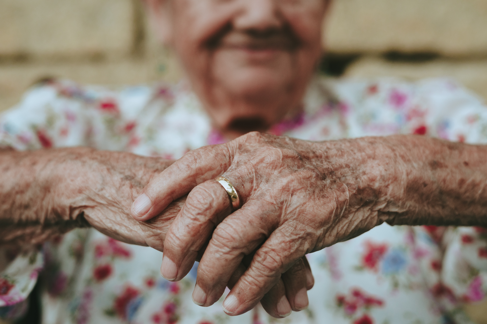

Saúde e Bem-Estar
Garantir o acesso à saúde de qualidade e promover o bem-estar para todos, em todas as idades
No Brasil, a Agenda 2030 para o Desenvolvimento Sustentável enfrenta alguns desafios
específicos no que diz respeito à ODS 3 - "Garantir uma vida saudável e promover o
bem-estar para todos, em todas as idades".
Alguns dos principais desafios incluem:
-

Desigualdades na saúde
Uma das maiores questões é a desigualdade no acesso aos serviços de saúde.
O Brasil possui um sistema de saúde complexo, com diferentes níveis de qualidade e acesso em diferentes regiões.
As disparidades socioeconômicas, geográficas e étnicas contribuem para a falta de acesso
equitativo aos serviços de saúde, afetando principalmente as populações mais vulneráveis, como as
comunidades indígenas, quilombolas, pessoas em áreas rurais e aqueles em situação de pobreza.
-

Cobertura universal de saúde
A busca pela cobertura universal de saúde é um desafio significativo.
Apesar dos avanços nos últimos anos, ainda existem lacunas na oferta de serviços de
saúde essenciais para todos os brasileiros. A garantia de acesso a cuidados preventivos,
diagnóstico e tratamento adequados para todas as pessoas, independentemente de sua situação
socioeconômica, é um desafio importante.
-

Doenças crônicas e estilo de vida
As doenças crônicas não transmissíveis, como diabetes, doenças cardiovasculares e câncer,
representam uma carga crescente para o sistema de saúde brasileiro. Mudanças nos padrões de
estilo de vida, como dieta pouco saudável, sedentarismo, tabagismo e consumo excessivo de álcool,
contribuem para o aumento dessas doenças. O enfrentamento desses desafios requer a implementação de políticas de
promoção da saúde e prevenção de doenças, bem como o fortalecimento da atenção primária.
-
Saúde mental
A saúde mental é uma preocupação crescente no Brasil. A depressão, a ansiedade e outros
transtornos mentais afetam uma parcela significativa da população, mas o acesso a serviços
de saúde mental muitas vezes é limitado. É necessário aumentar os investimentos e a oferta
de serviços de saúde mental, além de reduzir o estigma associado a essas condições.
-

Envelhecimento da população
O Brasil está passando por um processo de envelhecimento da população, com um número crescente de idosos.
Isso traz desafios relacionados à saúde e ao cuidado dos idosos, incluindo a necessidade de adaptação dos
serviços de saúde, cuidados de longo prazo, prevenção de doenças crônicas e promoção do envelhecimento ativo e saudável.
-
Acesso a medicamentos e tecnologias de saúde
A garantia do acesso a medicamentos essenciais e tecnologias de saúde é um desafio no país.
Questões como a alta dependência de importações, a regulação de preços, a disponibilidade de
medicamentos em áreas remotas e a promoção da produção nacional de medicamentos são aspectos que
precisam ser abordados para melhorar o acesso aos cuidados de saúde.